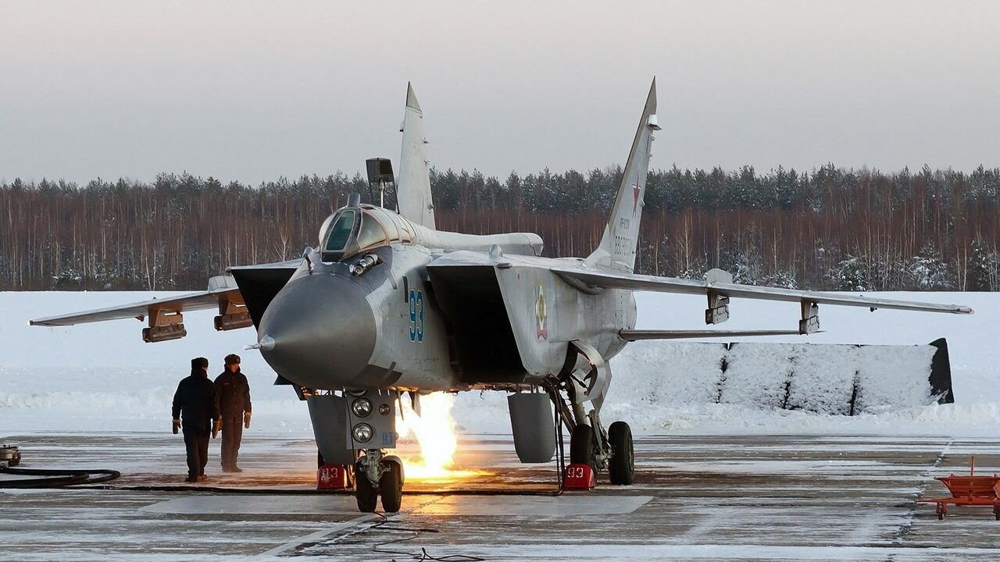

World News
Latest world news from WireMinute: international breaking stories, conflicts, diplomacy and global events, updated every minute.

Zelenskyy Warns of Major Russian Attack on Power Grid as Trump Tells Putin to Pull Back
27 November 2026 · 7:35 AM PKT
One Worker Killed as Projectile Hits Saudi Arabia's Jazan Oil Refinery
27 November 2026 · 6:49 AM PKT
Trump Says Victory Over Iran Is at Hand and Offers Tehran a Chance to Make a Deal
27 November 2026 · 6:16 AM PKT
Zelenskyy Says US Is Too Focused on the Middle East and Not Pressing Russia Hard Enough
27 November 2026 · 4:33 AM PKTIsraeli settlers damage Palestinian family’s homes in West Bank attack
27 November 2026 · 4:07 AM PKT
CIA Waterboarded More Detainees Than It Admitted, Newly Released Files Suggest
27 November 2026 · 4:07 AM PKT
My dad's watch stopped the moment he died - I found it in the ashes of Hong Kong tower fire
27 November 2026 · 4:03 AM PKTIn Canada, Quebec’s religious symbols ban faces a Supreme Court test
27 November 2026 · 3:51 AM PKTReport: CIA tortured more people with waterboarding than US agency admitted
27 November 2026 · 3:06 AM PKT
Diesel tanker carrying up to 7,000 tonnes capsizes near Ibiza, killing one
27 November 2026 · 3:01 AM PKTBangladesh garment workers clash with police over low wages
27 November 2026 · 2:04 AM PKT
Israel Threatens New Gaza Operation That Would Displace One Million People
27 November 2026 · 1:57 AM PKT
JUI-F chief Maulana Fazl among nine party leaders barred from Sargodha district for 30 days
27 November 2026 · 1:38 AM PKTAttack on Saudi’s Jazan refinery kills one person, disrupts operations
27 November 2026 · 1:34 AM PKT
Roads blocked, traffic congested in several parts of Karachi
27 November 2026 · 1:33 AM PKTIndian politician facing murder charges hosts 400,000-guest wedding
27 November 2026 · 1:32 AM PKTMexico seeks US talks about suspected SpaceX debris
27 November 2026 · 1:31 AM PKT
Huntingdon Train Attacker Guilty of 14 Counts of Attempted Murder
27 November 2026 · 1:19 AM PKTPeru burns more than 10 tonnes of seized drugs
27 November 2026 · 12:44 AM PKT
Watch: Roofs torn off and streets under water as severe weather hits US
27 November 2026 · 12:26 AM PKTWhy are winter rains forcing Palestinians in Gaza to flee again?
27 November 2026 · 12:19 AM PKT
Trump Calls Pre-Election GDP Figures 'Fake' and Demands Investigation
27 November 2026 · 12:15 AM PKTPsychiatric care under scrutiny after abuse scandals in Croatia and Bosnia
27 November 2026 · 12:07 AM PKTWhat will Trump’s latest tariffs mean for the world?
26 November 2026 · 11:53 PM PKTKushner explains the ‘good thing’ about Gaza’s destruction
26 November 2026 · 11:30 PM PKT
Guinea-Bissau Junta Delays Elections by Two Years, Extending Military Rule to 2028
26 November 2026 · 11:29 PM PKTGuinea-Bissau military leaders delay presidential election until 2028
26 November 2026 · 11:07 PM PKTEU leaders struggle to agree on long-term budget, $49bn Ukraine loan
26 November 2026 · 10:53 PM PKT
Teenager's Death in Colombia Raid Fuels Questions Over President's Security Crackdown
26 November 2026 · 10:24 PM PKT
Italy says two citizens killed in Iranian strike in Kuwait
26 November 2026 · 9:39 PM PKT
Two More Tankers Hit Mines Near Khasab, Iran's Guards Say
26 November 2026 · 9:10 PM PKT
Iran Denies Role in Kuwait Drone Attack That Killed Two Italians
26 November 2026 · 9:10 PM PKT
Hundreds of flights cancelled as severe weather disrupts Thanksgiving travel in US
26 November 2026 · 8:57 PM PKT
Germany Arrests Two Iraqis Over Alleged Plot to Attack Cologne Synagogue
26 November 2026 · 8:43 PM PKT
UN Tribunal Says UNRWA Lacked Evidence to Dismiss Gaza Aid Worker
26 November 2026 · 8:25 PM PKT
New UK-EU treaty has 10-year termination clause
26 November 2026 · 8:23 PM PKT
Depardieu to Face Rape Trial After Paris Court Rejects His Appeal
26 November 2026 · 8:08 PM PKT
Ibiza Tanker Found Only Partly Submerged as Crews Watch for Diesel Spill
26 November 2026 · 7:25 PM PKT
DR Congo Summons Uganda Envoy After General Backs Rebel Capture of Walikale
26 November 2026 · 6:09 PM PKT
Duran Duran Guitarist Andy Taylor Dies at 65 After Prostate Cancer Battle
26 November 2026 · 5:52 PM PKT
Tanker Struck by Unknown Projectile Near Khasab in Strait of Hormuz, Maritime Agency Says
26 November 2026 · 5:34 PM PKT
Thanksgiving Storms Leave More Than 800,000 Without Power Across the US
26 November 2026 · 5:26 PM PKT
Iraq Denies Troop Move Into Kurdistan as Court Backs Baghdad's Control of Borders
26 November 2026 · 4:47 PM PKT
Two Grain Ships Hit Near Odesa in Overnight Russian Attack, Ukraine Says
26 November 2026 · 4:05 PM PKT
North Korea Halts Military Aid to Russia After Rift Over South Korea, Ukrainian Intelligence Says
26 November 2026 · 3:46 PM PKT
Israel Says It Can Hit Iran Alone as Netanyahu Convenes Security Cabinet
26 November 2026 · 3:34 PM PKT
Nine Killed in Gaza Strikes Overnight, Including Deputy Education Minister
26 November 2026 · 3:16 PM PKT
Nine Injured, Three Critically, in Blast and Fire at Bangkok Oil Refinery
26 November 2026 · 2:40 PM PKT
German Boat Dealer Suspected of Supplying Smugglers Behind a Third of Channel Crossings
26 November 2026 · 2:02 PM PKT
Six Women Sentenced to Death in Iran After January Protests, UN Rapporteur Says
26 November 2026 · 12:26 PM PKT
Veruschka, Pioneering Supermodel of the 1960s, Dies at 87 in Berlin
26 November 2026 · 11:43 AM PKT
Macy's Thanksgiving Day Parade Postponed to Saturday in First Weather Delay in 100 Years
26 November 2026 · 11:06 AM PKT
Puerto Rico Court Cancels Luma Power Contract, Giving Island a Year to Find a New Operator
26 November 2026 · 10:40 AM PKT
Families Fear 25 Young Men Dead After Migrant Boat Capsizes Off Libya
26 November 2026 · 10:24 AM PKT
Iran Says Tankers and LNG Carrier Caught Fire After Mine Strikes in Strait of Hormuz
26 November 2026 · 9:16 AM PKT
US announces new tariffs on host of countries including China
26 November 2026 · 9:10 AM PKT
King Tides Flood California Coast as Record Surf Pounds Beaches Over Thanksgiving
26 November 2026 · 8:14 AM PKT
Kim Jong Un Calls for Wider Deployment of Tactical Nuclear Weapons
26 November 2026 · 7:19 AM PKT
Explosion Rocks Sanaa as Coalition Intercepts Houthi Missiles Aimed at Riyadh
26 November 2026 · 6:58 AM PKT
Ukraine attacks Russian military base, says five planes struck
26 November 2026 · 6:39 AM PKT
Explosion Reported Near Tanker Off Dubai Coast, Crew Safe and No Damage
26 November 2026 · 6:13 AM PKT
ISIL Attack Kills Two Syrian Security Personnel in Hasaka, Five Wounded
26 November 2026 · 5:52 AM PKT
Spanish elections: What you need to know and what's at stake
26 November 2026 · 5:23 AM PKT
Has global jihadism failed, or is it simply changing shape?
26 November 2026 · 5:22 AM PKT
Houthis Strike Second Saudi Refinery in Two Days, Killing a Worker at Jazan Plant
26 November 2026 · 5:14 AM PKT
Russian Ballistic Missiles Hit Kyiv Shopping Centre and Two Buildings, Seven Injured
26 November 2026 · 4:25 AM PKT
Israeli Judges Recommend Dropping Netanyahu's Bribery Case in Major Trial Setback
26 November 2026 · 3:14 AM PKT
US Education Department Moves Against Virginia School District Over Abuse Scandal
26 November 2026 · 2:50 AM PKT
US stocks fall further as fears over AI intensify
26 November 2026 · 2:43 AM PKT
Ukraine Says Its Blysk Laser Shot Down a Jet-Powered Russian Drone in a World First
26 November 2026 · 2:06 AM PKT
At Least 31 Killed as Fuel Tanker Overturns and Catches Fire on Cairo Ring Road
26 November 2026 · 12:07 AM PKT
Ukraine Says Five Russian Warplanes Hit in Strike on Savasleyka Airfield
25 November 2026 · 11:45 PM PKT
Colombian police storm supermarket to free 76 held hostage for 17 hours
25 November 2026 · 11:41 PM PKT
Hera Images Reveal Huge Crater on Asteroid Struck in Planetary Defence Test
25 November 2026 · 10:40 PM PKT
Colombian Forces Storm Cartagena Supermarket, Free 20 Hostages After 17-Hour Siege
25 November 2026 · 10:27 PM PKT
North Korea Expels Swiss Envoy and Orders Pyongyang Office Shut in Sanctions Row
25 November 2026 · 10:08 PM PKT
World Records Six Straight Days More Than 2C Above Preindustrial Levels, a First
25 November 2026 · 9:38 PM PKT
Pete Edochie, Nollywood's Commanding Voice, Dies at 79
25 November 2026 · 7:09 PM PKT
Court Throws Out Report That Could Have Impeached South Africa's Ramaphosa
25 November 2026 · 6:05 PM PKT
Leaked Russian Records Put Soldier Death Toll in Ukraine at Nearly 500,000
25 November 2026 · 5:46 PM PKT
Russian Strikes Kill at Least Five and Cut Power Across Five Ukrainian Regions
25 November 2026 · 5:28 PM PKT
Nineteen Civilians Killed as Drones Hit Homes in Sudan's Blue Nile State
25 November 2026 · 5:09 PM PKT
Israeli Strike Kills Senior Hamas Security Official and His Family in Gaza City
25 November 2026 · 4:43 PM PKT
Sixteen Dead, Ten Still Trapped as Flooded Gold Mine Search Enters Fourth Day
25 November 2026 · 4:33 PM PKT
Six Killed as Small Plane Crashes Into Sea Off Mississippi Coast
25 November 2026 · 3:14 PM PKT
Sarkozy and Wife Carla Bruni Ordered to Stand Trial Over Witness Tampering
25 November 2026 · 2:56 PM PKT
Britain Warns Firms Supplying Ukraine of Russian Sabotage Threat
25 November 2026 · 2:16 PM PKT
Tear Gas in Gazipur as Bangladesh Garment Workers Reject 36% Pay Rise
25 November 2026 · 12:16 PM PKT
Australia and Solomon Islands Sign Sweeping Security Treaty in Shift Away From China
25 November 2026 · 11:31 AM PKT
Houthis Say They Hit Saudi Arabia's Largest Oil Refinery as Coalition Strikes Hodeidah Port
25 November 2026 · 9:59 AM PKT
Ábrego García Arrives in Spain, Ending Two-Year Deportation Battle
25 November 2026 · 7:33 AM PKT
CIA and National Intelligence Office Suffer Apparent Cyberattack on Unclassified System
25 November 2026 · 7:13 AM PKT
Eisenkot's Coalition Hunt Turns to Ultra-Orthodox Parties as Lieberman Reverses Course
25 November 2026 · 6:48 AM PKT
Five Killed as Turkish Military Helicopter Crashes During Training Flight
25 November 2026 · 5:45 AM PKT
DR Congo Rebels Call Off Advance on Bunia and Pull Back After Days of Fighting
25 November 2026 · 5:23 AM PKT
Putin Says Retaliation Is Inevitable as Ukraine Keeps Hitting Russian Oil Refineries
25 November 2026 · 4:32 AM PKT
About 175 Migrants Missing After Boat From Senegal Vanishes En Route to Europe
25 November 2026 · 4:18 AM PKT
Senior Erdogan Ally Quits Ruling Party Post as Fund Probe Reaches His Son
25 November 2026 · 3:47 AM PKT
Trump Officials Split Over Targeting Iran's Leaders to End the War
25 November 2026 · 2:51 AM PKT
Mosque Loudspeaker Seizures in Israel Draw 'Religious War' Accusation Against Ben-Gvir
25 November 2026 · 2:02 AM PKT
Leaked Russian Records Put War Dead at 720,000, Investigation Finds
25 November 2026 · 1:42 AM PKT
Israel Says Iran Is Developing Chemical Weapons and Plotting to Kill Trump
25 November 2026 · 1:25 AM PKT
Colombian Forces Storm Cartagena Supermarket, Free All Hostages; One Gunman Killed
25 November 2026 · 12:30 AM PKT
Landmine Toll Reaches Five-Year High as Myanmar and Syria Bear the Brunt
25 November 2026 · 12:09 AM PKT
Russian Governor Detained in Rare Corruption Case Against Regional Leader
24 November 2026 · 11:48 PM PKT
US Army Detonates Five Tons of Toxic Lead Explosives in Iowa, Calls Blast a Success
24 November 2026 · 11:30 PM PKT
US Sanctions on Hezbollah-Linked Groups May Have Limited Impact, Analysts Say
24 November 2026 · 10:58 PM PKT
Seven Killed as Suspected Gas Blast Flattens Hanoi Hot Pot Eatery
24 November 2026 · 10:14 PM PKT
Riyadh's Tallest Tower Struck Again as 11 Injured in Financial District Attack
24 November 2026 · 9:46 PM PKT
China Places Shanghai Party Chief Chen Jining Under Corruption Investigation
24 November 2026 · 9:12 PM PKT
Two Arrested After Break-In at William and Kate's Country Home in Norfolk
24 November 2026 · 8:19 PM PKT
Britain Freezes Houthi Assets and Sanctions Four Senior Officials
24 November 2026 · 7:32 PM PKT
Iraq Orders Federal Takeover of Kurdish Oilfields and Border Crossings
24 November 2026 · 6:35 PM PKT
Malaysia to Send More Than 6,500 Myanmar Nationals Back to Myanmar
24 November 2026 · 4:32 PM PKT
Gaza Health Ministry Declares Epidemic Alert as Meningitis Cases Surge
24 November 2026 · 3:47 PM PKT
Strike on Buses and Trucks in Yemen's Lahij Leaves 25 Dead or Missing
24 November 2026 · 3:47 PM PKT
DR Congo Says Aircraft Missing as Rebels Claim to Have Shot Down Plane
24 November 2026 · 3:24 PM PKT
Japan to Pay ICC Dues Early to Shield Court From US Sanctions
24 November 2026 · 2:36 PM PKT
Magnitude 5.3 Earthquake Strikes Nepal, Tremors Felt Across India, Bhutan and China
24 November 2026 · 12:06 PM PKT
South Korea Scrambles Jets as Russian Warplanes Enter Air Defence Zone
24 November 2026 · 11:44 AM PKT
Danish Supreme Court Rules 'Ghetto Law' Evictions Were Not Discrimination
24 November 2026 · 11:13 AM PKT
India Finds Bisleri Water Sample Unsafe, Widens Checks to All Bottled Water Brands
24 November 2026 · 10:55 AM PKT
Russian Strike on Zaporizhzhia Kills Two and Wounds 44, Including Four Children
24 November 2026 · 10:34 AM PKT
Colombia's President Blames Ex-FARC Rebels for Villavicencio Car Bomb
24 November 2026 · 10:05 AM PKT
NATO Chief Vows to Defend Space After Reports of Russian Nuclear-Armed Satellite
24 November 2026 · 9:00 AM PKT
Bangladesh Arrests Hasina's Former Press Secretary and Deploys 108 Paramilitary Platoons Ahead of Her Return
24 November 2026 · 8:24 AM PKT
Excavator Video Near Sacred Sheshnag Lake Sparks Outrage in Kashmir
24 November 2026 · 8:05 AM PKT
Shenzhou-24 Docks With Tiangong as Pakistan's Zeeshan Ali Becomes First Foreign Astronaut Aboard China's Station
24 November 2026 · 7:41 AM PKT
Leaked Russian Records Point to 700,000 War Dead in Ukraine, Analysis Finds
24 November 2026 · 7:18 AM PKT
Israeli Strike Kills Family of Four in Gaza City, a Day After Hamas Security Chief's Death
24 November 2026 · 6:49 AM PKT
Trump Says Iran War Funded Through January as Tehran Tightens Its Grip on Hormuz
24 November 2026 · 5:10 AM PKT
China Sentences Official to Death for Spying and Leaking State Secrets
24 November 2026 · 4:00 AM PKT
Leaked Records Show More Than 1,000 Russian Soldiers Died by Suicide During Ukraine War
24 November 2026 · 3:40 AM PKT
Israeli Forces Raid Homes in Southern Syria as Border Villages Live in Fear
24 November 2026 · 2:49 AM PKT
US Hits Iran's Shadow Banking Networks With Sweeping New Sanctions
24 November 2026 · 1:52 AM PKT
Iran Flogs Singer Parastoo Ahmadi 74 Times Over Hijab-Free Online Concert
24 November 2026 · 1:34 AM PKT
Drones Strike Police Base in Colombian Border City of Cúcuta, Wounding Three Civilians
24 November 2026 · 12:49 AM PKT
Reprisal Attacks Kill Dozens in Nigeria's Niger State After Village Head's Murder
23 November 2026 · 11:17 PM PKT
Houthi Media Say Strike on Hodeidah Telecom Building Killed at Least 10
23 November 2026 · 10:21 PM PKT
EU Unveils 22nd Sanctions Package Targeting Russian Banks, Crypto and Shadow Fleet
23 November 2026 · 9:33 PM PKT
Gaza Faces Severe Hearing Aid Battery Shortage Under Israeli Restrictions
23 November 2026 · 7:44 PM PKT
Iran Vows to Use Every Means to Counter US Blockade
23 November 2026 · 6:55 PM PKT
Seattle Airport Operator 'Outraged' as ICE Arrests Two Passengers at Jet Bridge
23 November 2026 · 5:52 PM PKT
Bomb Threat Emails Hit 450 Schools in Germany and Schools Across Denmark
23 November 2026 · 5:34 PM PKT
Yunus Appeals for Global Pressure as Attacks on Grameen Bank Reach 97
23 November 2026 · 3:54 PM PKT
Kenya and DR Congo to Restore Full Diplomatic Ties After Three-Year Rift
23 November 2026 · 2:38 PM PKT
24 Civilians Killed in Attack on Cattle Camp in South Sudan, Including Seven Children
23 November 2026 · 12:08 PM PKT
Rubio Meets Qatari Prime Minister in Washington as Iran Mediation Continues
23 November 2026 · 11:48 AM PKT
Belgium's Airports Shut Down as Air Traffic Controllers Join National Strike
23 November 2026 · 9:19 AM PKT
Don Toliver Postpones London Show After Manchester Arena Evacuation Over Unknown Substance
23 November 2026 · 8:40 AM PKT
Netanyahu-Eisenkot Unity Talks End Without a Deal as Israel's Government Deadlock Deepens
23 November 2026 · 8:16 AM PKT
Molly Meldrum Dies at 83, the Australian Music Legend Who Championed a Nation's Sound
23 November 2026 · 7:04 AM PKT
Iran's Guards Claim Supertanker Sank After Mine Strikes in Strait of Hormuz
23 November 2026 · 2:43 AM PKT
Fire Sweeps Through Six Hotels in Zanzibar's Nungwi as 183 Tourists Are Evacuated
23 November 2026 · 1:55 AM PKT
Ukraine Defends Benghazi Ship Strikes as Self-Defence as Two Libyan Sailors Die
22 November 2026 · 9:13 PM PKT
Settler Violence Surges in West Bank as Shepherd Is Killed and Dozens of Structures Are Demolished
22 November 2026 · 9:04 PM PKT
Six Wounded in Strike on Sanaa Oil Company Fuel Station as Saudi Defences Down Drone and Missile
22 November 2026 · 6:47 PM PKT
Four Reported Killed as Drones Strike Homes in Khartoum Overnight
22 November 2026 · 4:50 PM PKT
Death Toll in Dymer Drone Strike Rises to 11 as Rescuers Keep Searching the Rubble
22 November 2026 · 3:35 PM PKT
South Korea Education Minister Resigns Over AI Cheating Scandal That Shook College Entrance Exam
22 November 2026 · 2:42 PM PKT
Trump's Iran Strategy Splits His Team as Blockade Enters Its 130th Day
22 November 2026 · 2:24 PM PKT
Dashcam Captures Missile Slamming Into Lviv Street as Two Killed in Russian Barrage
22 November 2026 · 1:33 PM PKT
Turkey Warns Iran War's Economic Burden Is Turning Destructive and Urges a US-Iran Deal
22 November 2026 · 12:28 PM PKT
Indonesia Confirms 24 Killed in Factory Fire as Search Resumes for About 30 Missing
22 November 2026 · 11:20 AM PKT
US Court Sends Summonses for India's Ajit Doval to Delhi Courts in Pannun Assassination Lawsuit
22 November 2026 · 8:19 AM PKT
Eisenkot Invites Netanyahu's Likud to Marathon Coalition Talks in Bid to Form Broad Government
22 November 2026 · 7:05 AM PKT
Turnout Falls as France Protests Enter Sixth Weekend, With Clashes in Marseille and Lyon
22 November 2026 · 6:14 AM PKT
Trump Vows a Permanent Iran Deal That No Future President Can Undo
22 November 2026 · 5:49 AM PKT
Aoun Demands Israeli Withdrawal and an End to Iranian Meddling in Lebanon
22 November 2026 · 5:11 AM PKT
Pezeshkian Says Iran Faces 'Silent Economic War' Tougher Than Missile War
22 November 2026 · 4:49 AM PKT
Iran's Rolling Power Cuts Take Effect as War Damage Leaves Gas Output Short
22 November 2026 · 3:31 AM PKT
Two Wounded in Iranian Attacks on Bahrain, One in Critical Condition, Ministry Says
22 November 2026 · 2:47 AM PKT
Trump Wants Ukraine Peace Deal by January as Zelenskyy Calls Summit a Failure for Putin
21 November 2026 · 11:09 PM PKT
129 Bodies Recovered From Rubble in Central Gaza After 53-Day Search
21 November 2026 · 9:28 PM PKT
Iran Unveils New Twin-Missile Launcher at Underground Base as Guard Chief Warns Enemies
21 November 2026 · 9:08 PM PKT
Iran Claims Its Air Defences Hit a US F-16 Over the Gulf; Washington Denies It
21 November 2026 · 8:26 PM PKT
Israel Says Three Killed in Gaza Food-Vehicle Strike Were Militants as Aid Group Denies Link
21 November 2026 · 8:01 PM PKT
US Says Russia Is Open to NATO-Style Guarantees for Ukraine, but Moscow Says No
21 November 2026 · 6:50 PM PKT
Russia Begins Towing Fire-Damaged Sparta II Out of Finnish Waters
21 November 2026 · 6:02 PM PKT
Zelensky Calls Crimean Bridge Strikes a 'Fair Response' to 109 Russian Attacks on Ukrainian Bridges
21 November 2026 · 5:47 PM PKT
Mexico Will Try 'El Chapo Isidro' at Home Despite US Extradition Request
21 November 2026 · 5:30 PM PKT
Israeli Strikes Hit Southern Lebanon Towns as Border Attacks Continue
21 November 2026 · 5:19 PM PKT
UN Talks Agree to Work on Rules for AI 'Killer Robots' by 2028
21 November 2026 · 3:43 PM PKT
Iran Says Reopening Hormuz Is 'Not Difficult' if US Accepts Its Terms
21 November 2026 · 2:59 PM PKT
Iran Claims Fourth US Drone Downed in 24 Hours, a 20th MQ-1 Over Hormuz
21 November 2026 · 2:52 PM PKT
Iran Says a Tanker Hit a Mine and Caught Fire East of Hormuz After Two Vessels Were Struck
21 November 2026 · 2:07 PM PKT
Zelenskyy Calls Putin a 'Killer' After Trump Describes Russian Leader as His Friend
21 November 2026 · 1:49 PM PKT
South Africa's First Woman Deputy President, Phumzile Mlambo-Ngcuka, Dies at 71
21 November 2026 · 1:11 PM PKT
Basra Blast Death Toll Still Disputed as Health Ministry Counts Two Dead, 46 Hurt
21 November 2026 · 12:46 PM PKT
Trump Confirms Hackers Breached the FBI's National Crime Database
21 November 2026 · 12:07 PM PKT
American Freed After Nearly a Decade in Cuban Detention Returns to US
21 November 2026 · 11:47 AM PKT
Man Convicted of Starting Deadly Palisades Fire That Killed 12
21 November 2026 · 11:08 AM PKT
Hegseth Restricts US Military Cooperation With Canada in Secret Memo
21 November 2026 · 10:21 AM PKT
Bolsonaro Hospitalised in Brasilia With Near-Complete Intestinal Obstruction
21 November 2026 · 10:09 AM PKT
Mamdani Unveils Plan to Close Rikers Island by 2032, Five Years Past Legal Deadline
21 November 2026 · 9:33 AM PKT
Fined $811 Million for Scamming Detained Migrants, the Bail Bond Racket Carried On
21 November 2026 · 9:06 AM PKT
Pentagon Releases Three New Declassified UFO Videos Filmed in the Middle East
21 November 2026 · 8:20 AM PKT
Iran War Has Cost US Military $48.3 Billion, Pentagon Tells Senators
21 November 2026 · 7:53 AM PKT
One Dead and 16 Injured as Peru Counts the Cost of the Junin Earthquake
21 November 2026 · 7:27 AM PKT
Russian Strike on Zelenskyy's Hometown Kills Two, Wounds 60
21 November 2026 · 7:26 AM PKT
French Senate Approves Police Shootings Law Critics Call a 'Licence to Kill'
21 November 2026 · 5:31 AM PKT
Nigeria Funeral Boat Toll Rises to 29 as Search for Trapped Passengers Goes On
21 November 2026 · 5:13 AM PKT
Poland Confirms Russia Tried to Kill Ukrainian Rapper Twice as Denmark Presses EU for Action
21 November 2026 · 3:47 AM PKT
France Probes Depardieu and Houellebecq Over Alleged Gang Rape on Film Set
21 November 2026 · 3:08 AM PKT
Bukele Names Three Salvadoran Soldiers Killed in Haiti and Details Drone Blast That Killed Them
21 November 2026 · 2:48 AM PKT
Seven Killed in Israeli Drone Strikes Across Central Gaza as Ceasefire Frays
21 November 2026 · 2:30 AM PKT
Anti-Hamas Palestinian Groups Accused of Taking Part in Israeli Gaza Operation
21 November 2026 · 2:01 AM PKT
Iraqi Forces Enter Kataib Hezbollah Stronghold in Deal After Oil-Smuggling Standoff
21 November 2026 · 12:52 AM PKT
Zelensky Calls Putin a Killer as Trump Defends Calling Him a Friend
20 November 2026 · 11:52 PM PKT
Indian Man Gets 19 Years in US Prison for Plot to Kill Sikh Separatist in New York
20 November 2026 · 11:28 PM PKT
Qatar Emir Pledges 15bn Euros in Germany as Berlin Visit Pushes Diplomacy to End Iran War
20 November 2026 · 10:48 PM PKT
Thousands March Across Europe as Cost-of-Living Protests Hit Sixth Weekend
20 November 2026 · 10:36 PM PKT
Tanker Hit in Strait of Hormuz as Doubt Grows Over Iran's Blockade-Busting Convoy
20 November 2026 · 9:56 PM PKT
Houthis Threaten Saudi Red Sea Ports as Coalition Orders Hodeidah Evacuation
20 November 2026 · 8:52 PM PKT
White House Cyber Director Cairncross Is Out After Week of Tech Outages
20 November 2026 · 8:30 PM PKT
South Africa Moves Ahead With 5.2 GW Nuclear Build, First New Reactors in Decades
20 November 2026 · 7:33 PM PKT
Trump Says Vance Got It Wrong on the Iran War as Questions Grow Over His Deputy
20 November 2026 · 6:31 PM PKT
Prosecutors Confirm All Three Objects That Crashed in Poland Were Russian Missiles
20 November 2026 · 5:19 PM PKT
UK and EU Seal Brexit Reset in Joint Declaration, Adding Defence Ties and £17bn Boost
20 November 2026 · 4:53 PM PKT
South Africa Records 581 Women Killed in Three Months as Crime Figures Lay Bare Femicide Crisis
20 November 2026 · 4:37 PM PKT
Pakistan Minister Arrives in India in First Visit Since Last Year's Four-Day War
20 November 2026 · 2:37 PM PKT
Bukele Registers for Third Term in El Salvador After Term Limits Scrapped
20 November 2026 · 1:39 PM PKT
Russia Strikes Kyiv Again as Barrage Death Toll Rises to Nine
20 November 2026 · 1:19 PM PKT
APEC Leaders Adopt Shenzhen Declaration, Pledging Closer Ties and Fewer Trade Barriers
20 November 2026 · 12:31 PM PKT
Gulf Shipping Insurance Soars as Blockade Squeezes Trade
20 November 2026 · 11:30 AM PKT
Thousands March Across Colombia Against Tax Rises and Closer US Military Ties
20 November 2026 · 9:50 AM PKT
Fiona, the Internet-Famous Hippo, Dies at 9 After Swallowing a Visitor's Hat
20 November 2026 · 9:28 AM PKT
Trump's Election Security Pick Says Jan 6 Was Not an Attack at Senate Hearing
20 November 2026 · 7:47 AM PKT
Kirkland & Ellis Gave $11.8m in Free Legal Work to Trump Administration, Democrats Say
20 November 2026 · 7:07 AM PKT
UK to Send Ukraine More Than 1,000 Long-Range Strike Drones in £260m Package
20 November 2026 · 6:52 AM PKT
Haiti Police Say 34 Suspected Gang Members Killed in Martissant Raid
20 November 2026 · 6:24 AM PKT
Iran-Linked Plot Suspect Declares Innocence and Seeks New Lawyers in New York Court
20 November 2026 · 6:00 AM PKT
Six Killed, Including Two Children, as Suspected Gas Blast Collapses Tbilisi Apartment Block
20 November 2026 · 4:52 AM PKT
Appeals Court Keeps Venezuelan Deportation Protections Frozen for Now
20 November 2026 · 2:38 AM PKT
Senate Rejects Bid to Rein In Trump's War Powers on Iran
20 November 2026 · 1:58 AM PKT
Burnham Says Europe Is Ready to Join Talks to End Russia's War in Ukraine
20 November 2026 · 1:30 AM PKT
Aid Group Warns Gaza's Children Face Dangers Seen Nowhere Else After Three Years of War
20 November 2026 · 1:12 AM PKT
Three French Officers Sentenced to Prison Over Racist Beating of Music Producer Michel Zecler
20 November 2026 · 12:28 AM PKT
Iraqi Forces Enter Kataib Hezbollah Stronghold as Militia Vows to Stay
19 November 2026 · 11:32 PM PKT
Trump Warns of Fresh Iran Strikes After New Year if Talks Fail
19 November 2026 · 11:15 PM PKT
Kerch Bridge Arch and Main Beam Damaged, Russia Says, as Rail Reopens and Repairs Are Weighed
19 November 2026 · 10:50 PM PKT
Trump Official Suggested Venezuela Take Part of Guyana's Essequibo, Sources Say
19 November 2026 · 10:29 PM PKT
South Korea's Top Court Orders Retrial for Ex-PM Han Over Martial Law Role
19 November 2026 · 9:32 PM PKT
Denmark Approves Greenland Security Deal With US in Unanimous Vote
19 November 2026 · 8:29 PM PKT
Somalia Orders UAE Ambassador Out Within 72 Hours, Citing 'Open Invasion'
19 November 2026 · 8:00 PM PKT
'Gaza Syndrome': Film Examines the Trauma Soldiers Carry Home From Gaza
19 November 2026 · 7:57 PM PKT
Britain and EU Poised to Seal Reset Deal at Brussels Summit, but Divisions Remain
19 November 2026 · 7:56 PM PKT
COP31 Ends Without a Deal as President Declares No Consensus in Antalya
19 November 2026 · 7:42 PM PKT
Mosque Set on Fire in Northern Israel as Politicians Blame Incitement
19 November 2026 · 6:44 PM PKT
US Clashes With Russia and China at UN Over Iran Nuclear Programme
19 November 2026 · 6:36 PM PKT
Three Killed, 124 Arrested as Bangladesh Unrest Spreads Ahead of Hasina Return
19 November 2026 · 5:48 PM PKT
Florida Pastor Convicted in Miami Over Plot to Kill Haiti's President Jovenel Moise
19 November 2026 · 5:45 PM PKT
Israel Ends One-Day Tank Raid Across Gaza Ceasefire Line as Main Road Reopens
19 November 2026 · 5:27 PM PKT
Trump Says There Are Signs Iran Is Turning to Chemical and Biological Weapons, but Offers No Evidence
19 November 2026 · 5:10 PM PKT
Myanmar Refuses to Fully Comply With World Court Genocide Orders
19 November 2026 · 3:11 PM PKT
Trump, Xi and Putin Issue Joint Peace Declaration After First-Ever Trilateral Summit
19 November 2026 · 2:51 PM PKT
Europe Wins a Seat at Ukraine Peace Talks as Trump Questions Billions in Military Aid
19 November 2026 · 10:38 AM PKT
Riyadh's Tallest Tower Hit Again in Second Strike Within a Week
19 November 2026 · 10:22 AM PKT
Van Gogh Chestnut Trees Painting Sells for Record $190.4m After Nazi-Era Claim Settled
19 November 2026 · 9:38 AM PKT
Whole Japanese City Ordered to Evacuate After 5.7 Quake Jolts Kumamoto
19 November 2026 · 9:17 AM PKT
Ethiopian and Eritrean Forces Clash at Border as Fears of Full-Scale War Grow
19 November 2026 · 8:36 AM PKT
Islam Set to Overtake Christianity as World's Largest Faith by 2035
19 November 2026 · 8:21 AM PKT
Eight Wounded as Driver Rams Pedestrians at Several Spots in Kafr Qasim
19 November 2026 · 8:05 AM PKT
Musk Says He Regrets Record Midterm Spending and Is 'Not MAGA'
19 November 2026 · 7:50 AM PKT
Russian Charged With Spying on Palantir Staff in US Over Ukraine Support
19 November 2026 · 7:25 AM PKT
Iran Says Two Supertankers Caught Fire and Were Abandoned After Hormuz Mine Strikes
19 November 2026 · 5:52 AM PKT
Four Bodies Recovered After Migrant Boat Capsizes Off Senegal as Dozens Remain Missing
19 November 2026 · 5:07 AM PKT
Record Rain Floods South Florida Streets as Broward Declares Emergency
19 November 2026 · 3:44 AM PKT
Iraqi Court Jails Six French Citizens for Life Over Islamic State Membership
19 November 2026 · 3:28 AM PKT
North Korea Expands Uranium Plant at Yongbyon, Nuclear Watchdog Says
19 November 2026 · 3:26 AM PKT
US and Venezuela Sign Military Cooperation Deal as Hegseth Makes Surprise Caracas Visit
19 November 2026 · 2:50 AM PKT
Putin's Nuclear Briefcase Spotted at China Summit Ahead of Rare Three-Way Talks
19 November 2026 · 1:57 AM PKT
Russian Strikes on Odesa's Historic Centre Kill Four, Wound Thirteen
19 November 2026 · 12:54 AM PKT
Ahmed Touloub and Wife Halima Jailed 39 Years After Daughter Inass Touloub's Death
18 November 2026 · 11:06 PM PKT
Spanish Court Opens Criminal Investigation Into Julio Iglesias Over Sex Offence Allegations
18 November 2026 · 10:46 PM PKT
US Egg Giant to Cull 1.8 Million Birds After Bird Flu Hits Florida Farm
18 November 2026 · 9:49 PM PKT
Democrats Choose Jeffries as Speaker Nominee, Clearing Path to Historic First
18 November 2026 · 9:21 PM PKT
Iran Says It Brought Down a US Reaper Drone Near the Strait of Hormuz
18 November 2026 · 8:57 PM PKT
William and Kate Meet Modi in New Delhi as Three-Day India Visit Ends
18 November 2026 · 8:17 PM PKT
Israel Says Central Gaza Tank Operation Is Over as Main Road Reopens
18 November 2026 · 7:53 PM PKT
Nigeria's Election Campaign Turns Violent as Attacks Spread Ahead of 2027 Vote
18 November 2026 · 7:15 PM PKT
Ukraine Bids Farewell to Rayana, the Mother and Drone Operator Killed on the Front Line
18 November 2026 · 6:10 PM PKT
Thomas Markle Indicted on Two Child Abuse Image Counts, Faces Up to 40 Years
18 November 2026 · 4:18 PM PKT
Trump, Xi and Putin Begin First-Ever Three-Way Summit in Shenzhen
18 November 2026 · 4:10 PM PKT
World Court to Rule on Rohingya Genocide Case as Refugees Await Justice
18 November 2026 · 3:58 PM PKT
Ghana's $60m Presidential Jet Sparks Outrage as Critics Question Mahama's U-Turn
18 November 2026 · 3:16 PM PKT
Arsenic Reaches Thailand's Village Wells as Mining Pollution Spreads From Myanmar
18 November 2026 · 2:22 PM PKT
Forensic Expert Says Epstein Was Murdered, Not a Suicide in 2019
18 November 2026 · 1:48 PM PKT
Xi Pitches Free Trade at APEC Ahead of First-Ever Meeting With Trump
18 November 2026 · 1:28 PM PKT
Missing ADNOC Crew Member Found Dead After Strait of Hormuz Attack
18 November 2026 · 12:51 PM PKT
Poverty, Threats and Fear Push African Journalism to Breaking Point, Survey Finds
18 November 2026 · 12:34 PM PKT
Category 5 Cyclone Xavier Batters Northern Cook Islands With 315 km/h Gusts
18 November 2026 · 12:12 PM PKT
Xi and Putin Open Talks in Shenzhen a Day Before First-Ever Meeting With Trump
18 November 2026 · 11:51 AM PKT
Russell Brand Faces Prison Rules Inquiry After Wife Reads Out Message Claiming His Innocence
18 November 2026 · 11:18 AM PKT
Coalition Orders Civilians Out of Hodeidah Port as Houthis Threaten Saudi Ports
18 November 2026 · 10:55 AM PKT
Australia Sanctions Three Israelis and Four Groups Over West Bank Settlement Expansion
18 November 2026 · 10:00 AM PKT
Paramilitary Deployed as Bangladesh Lockdown Brings More Killings and Arson
18 November 2026 · 9:42 AM PKT
Irish Man Indicted in US for Destroying $60 Million Military Plane at Shannon Airport
18 November 2026 · 9:23 AM PKT
Man Sentenced to More Than 27 Years Over Iran-Backed Plot to Kill Trump
18 November 2026 · 9:15 AM PKT
Pregnant US Citizen Pepper-Sprayed and Pinned to Ground by ICE Agents in California
18 November 2026 · 8:02 AM PKT
Kuwait Names Iran Over Drone Attacks and Reserves Right to Self-Defence
18 November 2026 · 7:35 AM PKT
Ecuadorian Fishermen Take Trump Administration to Court Over Drone Strike on Their Boat
18 November 2026 · 6:58 AM PKT
Gaza Ceasefire Could Collapse Without Action, Peace Board Warns UN
18 November 2026 · 6:44 AM PKT
Quad Leaders Warn on Economic Coercion in First Summit in Two Years
18 November 2026 · 6:24 AM PKT
Haiti Formalises Security Pact With El Salvador as Crowds Back Bukele's Troops
18 November 2026 · 5:24 AM PKT
New York Shortlists Ten Developers for First New Nuclear Plant in Decades
18 November 2026 · 4:20 AM PKT
Pentagon Tells Allies Ukraine Deep Strikes Do Not Work as Germany and Britain Push Back
18 November 2026 · 3:57 AM PKT
Kahana Takes Speaker's Chair as Eisenkot Bloc Seizes Control of Israel's Parliament
18 November 2026 · 3:38 AM PKT
Tear Gas and Water Cannon as Brussels Student March Turns Tense
18 November 2026 · 2:52 AM PKT
Navy Chief Tells Senators the Iran War Is Straining the Fleet
18 November 2026 · 2:35 AM PKT
Record Surf Pounds California Coast as El Nino Swell Floods Beaches and Closes Piers
18 November 2026 · 1:55 AM PKT
Rubio Says US Is Not Under Systemic Attack After Wave of Tech Outages
18 November 2026 · 12:42 AM PKT
Russian Military Transport Plane Crashes in Siberia, Killing All 19 on Board
18 November 2026 · 12:15 AM PKT
US Confirms Strike on Iran Missile Site on Qeshm Island in Strait of Hormuz
18 November 2026 · 12:12 AM PKT
Turnout Falls Sharply as French Public Workers Strike Over Pay
17 November 2026 · 11:26 PM PKT
North Macedonia and Greece Foil Alleged Iran-Linked Assassination Plot
17 November 2026 · 11:12 PM PKT
Southern Separatists Mobilise to Defend Aden as Houthi Forces Close In
17 November 2026 · 10:41 PM PKT
Student Movement Takes Its Seats in Serbia's Parliament After Historic Election Win
17 November 2026 · 10:07 PM PKT
Bessent Wins the China Chip Fight as Treasury Writes New Curbs Over Lutnick
17 November 2026 · 9:14 PM PKT
Trump Says Kim Would Like to Join China Summit, Opening Door to First Meeting in Seven Years
17 November 2026 · 6:41 PM PKT
Britain Sanctions Eight Israeli Settlement Firms and Gaza Aid Blocking Group
17 November 2026 · 6:21 PM PKT
46 Hurt as Two Trains Collide Near Prague's Main Station
17 November 2026 · 5:50 PM PKT
Twelve Charged in Canada Over $4.5m Luxury Car Theft Ring Bound for West Africa
17 November 2026 · 4:54 PM PKT
Turkish Police Raid Opposition Channel Sozcu TV, Take It Off Air and Install State Trustee
17 November 2026 · 4:06 PM PKT
Mongolia's President Khurelsukh Resigns Over Railway Corruption Claims
17 November 2026 · 3:54 PM PKT
Fighting in Ethiopia's Moyale Drives 50,000 Into Kenya as Mediation Fails
17 November 2026 · 3:39 PM PKT
Melbourne Cup Horse So You Are Found in Sydney Skip Bin, Vet Hospital Apologises
17 November 2026 · 3:22 PM PKT
Journalist Who Named Alleged Drug Traffickers Shot Dead in Costa Rica, First Such Killing in 25 Years
17 November 2026 · 2:50 PM PKT
Kim Jong Un Tours Ski Resort With Daughter Ju Ae Ahead of APEC Summit
17 November 2026 · 2:31 PM PKT
Mozambique Opposition Leader Mondlane Goes on Trial Over Deadly Election Unrest
17 November 2026 · 2:19 PM PKTIran Threatens Civilian Sites Near US Bases After Bahrain Radar Claim the US Denies
17 November 2026 · 1:41 PM PKT
Robert Pattinson Named the New James Bond, Seventh Actor to Play 007
17 November 2026 · 12:48 PM PKTVance Vows Iran War Will Not Become a Forever War, Denies Rift With Trump
17 November 2026 · 12:06 PM PKT
Ukraine Says Russia Struck Rescue Teams After Double-Tap Attack Killed 72
17 November 2026 · 11:45 AM PKT
Russian Bombers Land in Vietnam, Then Fly Back Past Taiwan and Japan
17 November 2026 · 10:51 AM PKT
Palestinian Woman, 72, Killed in Settler Gunfire Near Jericho, Health Ministry Says
17 November 2026 · 9:40 AM PKT
Wheat Ship Sinks Off Bulgaria After Crew Reports Sea-Drone Strikes
17 November 2026 · 9:06 AM PKT
Iran Rules Out Nuclear Inspections Until War Ends, Deputy Minister Says
17 November 2026 · 8:33 AM PKT
Trump’s Advisers Split Over China as Xi Summit Nears, With Nvidia Scandal Fuelling the Feud
17 November 2026 · 8:33 AM PKT
Kushner Says Progress Made Toward Ukraine Deal, Warns Hard Choices Remain
17 November 2026 · 8:06 AM PKT
At Least 13 Killed in Sudanese Army Airstrike in West Kordofan, Monitors Say
17 November 2026 · 8:05 AM PKT
Tanker Hit Twice in Strait of Hormuz as One Seafarer Goes Missing
17 November 2026 · 8:04 AM PKT
Magnitude 6.6 Earthquake Strikes Off Indonesia's Tual, No Tsunami Threat
17 November 2026 · 7:45 AM PKT
Life Sentence for Man Who Stabbed Dublin Schoolchildren in Attack That Sparked Riots
17 November 2026 · 6:45 AM PKT
US Sends Third Carrier Strike Group to Middle East as Iran Standoff Deepens
17 November 2026 · 6:26 AM PKT
Kyiv Reopens South Bridge to One-Way Traffic After Russian Strikes, North Bridge Still Closed
17 November 2026 · 6:10 AM PKT
Trump Heads to Asia for First-Ever Nuclear Talks With Xi and Putin, Says He Will Raise Ukraine
17 November 2026 · 6:09 AM PKT
Burnham Says Brexit Has Failed as Britain Seeks Closer EU Ties
17 November 2026 · 5:53 AM PKT
Iran Calls Dirty Bomb Report 'Baseless' as Trump Warns of Unprecedented Price
17 November 2026 · 5:26 AM PKT
EU Agrees to Revive Cooperation Deal With Syria in Major Step Toward Normal Ties
17 November 2026 · 5:07 AM PKT
Court Keeps Burin Olive Farmer Ghassan Najjar in Detention Until February
16 November 2026 · 11:45 PM PKT
Russian Drones Strike Kyiv Hours After Putin Vowed Harsher Retaliation for Bridge Attacks
16 November 2026 · 5:59 PM PKT
Five EU Countries Announce Rwanda Return Hub for Rejected Asylum Seekers
16 November 2026 · 5:22 PM PKT
EU Answers Russia's NATO Demands With Its Own List and Record Ukraine Aid
16 November 2026 · 5:08 PM PKT
Hong Kong Leader John Lee Heads to Shenzhen for APEC Summit as Asia-Pacific Leaders Gather
16 November 2026 · 4:45 PM PKT
Two Mass Shootings in South Africa Leave 17 Dead
16 November 2026 · 4:12 PM PKT
Ahmed Tibi Becomes First Arab Deputy Speaker of Israel's Knesset in Four Years
16 November 2026 · 2:10 PM PKT
Anwar Under Pressure as Malaysian Coalition Suffers Fourth Straight State Poll Defeat
16 November 2026 · 12:58 PM PKT
Russian Satellites Are Helping Iran Track US Forces, Analysis Says
16 November 2026 · 12:41 PM PKT
Eleven Killed as Fire Tears Through Shophouse in Phuket's Patong
16 November 2026 · 12:01 PM PKT
Prince Harry Tells Wounded Ukrainian Veterans: 'You're Going to Win the War'
16 November 2026 · 8:52 AM PKT
Australian MP Helen Haines Leaves Hospital Four Weeks After Attack That Cost Her Both Legs
16 November 2026 · 8:40 AM PKT
Pope Leo Demands Justice for Indigenous Leaders Murdered Defending the Amazon
16 November 2026 · 7:17 AM PKT
Guadalajara Cartel Founder Miguel Angel Felix Gallardo Dies at 80
16 November 2026 · 6:03 AM PKT
Iran Says It Will Not Wait to Be Hit as US and Israel Draw Up Plans for New Strikes
16 November 2026 · 5:23 AM PKT
Paris Bans Protests Near Schools and Universities as Unrest Enters Third Month
16 November 2026 · 4:16 AM PKT
UK to Follow EU Food Rules Without a Vote in Draft Deal to Scrap Border Checks
16 November 2026 · 3:22 AM PKT
Houthis Free 600 Detainees in Sanaa in Largest Unilateral Release of Yemen War
16 November 2026 · 2:50 AM PKT
Huge Crowds Fill Prague Park to Defend Public Media From Funding Overhaul
16 November 2026 · 2:19 AM PKT
Israel Vows Gaza Offensive Will Continue as Hamas Appeals for Winter Aid and Ceasefire Frays
16 November 2026 · 2:03 AM PKT
Supertanker Sank After Mine Strike in Strait of Hormuz, Iran's Guards Say
16 November 2026 · 1:33 AM PKT
Drones Strike Three Ships Off Romania's Black Sea Coast, Jets Scrambled Twice
16 November 2026 · 12:35 AM PKT
Hoax Bomb Threats Spread to Broadcasters and Flights as Europe's Wave Widens
16 November 2026 · 12:10 AM PKT
Russia Warns Estonia Its Actions Are on the Verge of Triggering Open War
15 November 2026 · 11:45 PM PKT
Somalia Says International Support Saved It as UN Mission Closes and Peacekeeper Funding Falters
15 November 2026 · 10:29 PM PKT
Private William Douglas Dal Bianco Dies From Wainwright Training Fire Injuries, the Fifth Soldier to Die
15 November 2026 · 9:27 PM PKT
Fire Sweeps Through Syrian Refugee Camp in Lebanon's Bekaa Valley, Leaving Hundreds Homeless
15 November 2026 · 8:35 PM PKT
Cyclone Akvan Makes Landfall Near Gopalpur, Weaker Than Feared
15 November 2026 · 8:03 PM PKT
Musk Accuses Zelenskyy of Lying Over Starshield Limits as Kyiv Warns Drones Are Losing Their Link
15 November 2026 · 6:58 PM PKT
Bahrain Holds Iran Responsible for Drone Attacks and Rejects Being a Battleground in Its Feud With the US
15 November 2026 · 6:06 PM PKT
Three Men Sentenced to Death in Jordan for Church Shooting That Killed Nine
15 November 2026 · 5:45 PM PKT
Saudi Arabia Replaces Yemen Coalition Commander as Houthis Close In on Aden
15 November 2026 · 4:45 PM PKT
More Than 3,600 Migrants Reach Canary Islands in Three Days as El Hierro Is Overwhelmed
15 November 2026 · 3:55 PM PKT
Four Hurt and Two Brothers Held as Israeli Forces Raid Balata Camp in Nablus
15 November 2026 · 2:58 PM PKT
500 Million Indians Left Poverty Behind — but Millions Still Live on the Edge
15 November 2026 · 2:23 PM PKT
Hamas Rafah Commander Killed in Overnight Israeli Strike in Southern Gaza
15 November 2026 · 12:44 PM PKT
ASEAN Summit Opens in Manila as Leaders Weigh Energy Crisis and Regional Tensions
15 November 2026 · 12:30 PM PKT
West Bank Olive Harvest Marred by Attacks as 286,000 Trees Damaged Since 2023
15 November 2026 · 12:10 PM PKT
UPS Cargo Jet and Copa Passenger Plane Collide While Taxiing at Miami Airport
15 November 2026 · 10:31 AM PKT
French-Speaking Summit Opens in Phnom Penh as Congo-Rwanda Feud Threatens a Split
15 November 2026 · 10:18 AM PKT
Houthis Say They Fired Missiles at Riyadh Airport and Financial Centre
15 November 2026 · 9:58 AM PKT
Video Captures Brooklyn Building Collapsing Around a Family Inside Their Home
15 November 2026 · 9:55 AM PKT
Judge Halts Closure of Historic Washington Golf Course in Blow to Trump Redevelopment Plan
15 November 2026 · 9:21 AM PKTTrump May Hold Off New Iran Strikes Unless Tehran or Houthis Provoke
15 November 2026 · 9:04 AM PKT
Madonna Painting Peeled Back in Naples Chapel to Reveal a Mother and Child from Gaza
15 November 2026 · 8:47 AM PKT
India Pledges $1.62 Billion to Rebuild Flood-Hit Nepal After Modi-Shah Talks
15 November 2026 · 6:41 AM PKT
Hundreds of Men March in Bern to Demand Men Do More Against Violence Towards Women
15 November 2026 · 6:02 AM PKT
Hours-Long Fuel Queues and Taxi Protests Across Iran on Eve of 'Bloody November' Anniversary
15 November 2026 · 5:18 AM PKT
Eisenkot Bloc Rules Out Unity Government With Netanyahu, Calling Vote Meddling a 'Coup Attempt'
15 November 2026 · 4:16 AM PKT
Evacuations Lifted After Bomb Found at Peoria Ethanol Plant; Hunt for Suspect Goes On
15 November 2026 · 3:56 AM PKT
Steering Failure Struck Tanker Two Minutes Before It Hit Docked Riverboat, Investigators Say
15 November 2026 · 3:45 AM PKT
Tens of Thousands March Across Portugal in Biggest Housing Protest Yet
15 November 2026 · 2:31 AM PKT
Two Killed, Including a Girl, in Car Bomb Blast in Damascus Suburb of Jaramana
15 November 2026 · 1:28 AM PKT
Iran Says Fifth Tanker in 24 Hours Hit a Mine in Hormuz as It Claims US Drone Downed
14 November 2026 · 9:53 PM PKT
Myanmar Airstrike Kills 12 at Displacement Camp in Rakhine, Including a Five-Year-Old
14 November 2026 · 9:27 PM PKT
Democrat Kreiss-Tomkins Wins Alaska Governor's Race, First Since 1998
14 November 2026 · 7:27 PM PKT
Trump Calls Iran War 'Effectively Over' as Tehran Claims Strike on US Radar in Bahrain
14 November 2026 · 6:53 PM PKT
Fighting Intensifies Around Badme as Ethiopia Accuses Eritrea of Leading Tigray Offensive
14 November 2026 · 5:50 PM PKT
Turkiye and Qatar Sign Mutual Defence Pact, Pledging a United Front Against Attack
14 November 2026 · 5:31 PM PKT
Supriya Sule Rules Out NCP Reunion, Saying Merger Talks Ended With Her Brother's Death
14 November 2026 · 4:57 PM PKT
South Sudan Delays Its First-Ever National Elections to February 2027
14 November 2026 · 4:44 PM PKT
Estonia Says Ukrainian Drones Disabled Russian Missile Ship in Gulf of Finland
14 November 2026 · 4:21 PM PKT
PMML Serves Legal Notice on Maryam Nawaz Over 'Terrorist' Remarks
14 November 2026 · 4:04 PM PKT
Trump Says Someone Else Should Negotiate for Kyiv as Zelenskyy Heads to Oslo Talks
14 November 2026 · 3:52 PM PKT
New Migrant Caravan Crosses Into Southern Mexico and Presses North Despite Tariff Threat
14 November 2026 · 3:34 PM PKT
Two Soldiers Martyred as 16 Militants Killed in North Waziristan Operations
14 November 2026 · 3:13 PM PKT
Nearly $20m in Cash Found Buried in Forests in Hungary Graft Probe
14 November 2026 · 2:26 PM PKT
Trump Says He Bears No Blame for US Flight Chaos as Airlines Recover
14 November 2026 · 2:15 PM PKT
Europe Names Five Nations to Speak for It at Ukraine Peace Talks
14 November 2026 · 1:56 PM PKT
At Least 38 Dead as Gunmen Ambush Villagers Bound for Market in Western Niger
14 November 2026 · 12:53 PM PKT
Britons Stock Up on Tinned Food and Bottled Water as Government's 'Be Ready' Campaign Takes Hold
14 November 2026 · 11:51 AM PKT
Tehran Shopkeeper Jokes He Quit His Old Job Because 'They Weren't Paying Salaries'
14 November 2026 · 10:30 AM PKT
Four Nations Urge Israel to Let 150,000 Tents Into Gaza as Winter Bites
14 November 2026 · 10:18 AM PKT
International Court Ends Afghanistan Case Covering US Forces
14 November 2026 · 9:36 AM PKT
Death Toll Rises to 26 in Assam Bus-Truck Crash Near Kaziranga
14 November 2026 · 8:19 AM PKT
Ukraine Fires Almost 1,200 Drones at Russia in One of the War's Biggest Air Attacks
14 November 2026 · 7:37 AM PKT
Drone Strike Sets Kyiv Hospital Ablaze, Injuring Three as Air Defences Strain
14 November 2026 · 7:15 AM PKT
Trump, Xi and Putin Adopt Peace Declaration After First Three-Way Summit
14 November 2026 · 7:00 AM PKT
Indonesia's Vice President Resigns in Diploma Row as His Father Rallies Behind Prabowo
14 November 2026 · 6:40 AM PKT
US Takes Custody of Army Officer Held in Britain Over Russia Spying Allegations
14 November 2026 · 6:00 AM PKT
London Police Open Inquiry Into David Walliams After New Sex-Offence Claims
14 November 2026 · 5:53 AM PKT
Afghanistan's Road to China Is Finished — but the Border Stays Shut
14 November 2026 · 5:38 AM PKT
US Forces Respond After Suspected Drone Spotted Over RAF Lakenheath
14 November 2026 · 5:05 AM PKT
Viable Bomb Found in Dublin Office as European Leaders Gather Nearby
14 November 2026 · 3:22 AM PKT
A Million People Line the Streets as Pope Leo Comes Home to Chiclayo
14 November 2026 · 2:46 AM PKT
Fake Video Calls, Real Losses: How a Deepfake Trap Drained $400 Million in Crypto
14 November 2026 · 1:33 AM PKT
WireMinute - News, updated every minute. More headlines